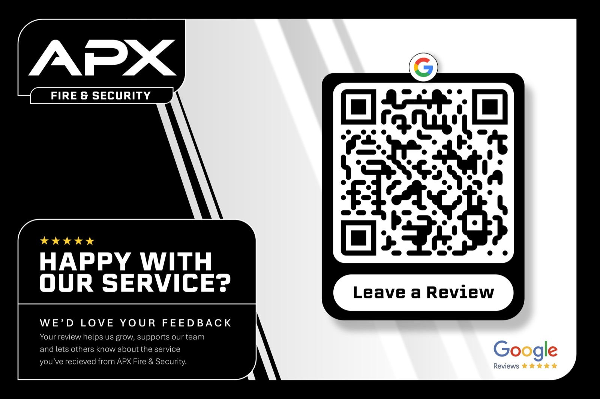

Selected work
APX Fire & Security.
Brand identity and digital presence for an NSI Gold fire and security installer serving London and the Home Counties since 1986.
The challenge
APX had deep technical credibility - CCTV, fire alarms, access control, video entry - but the brand and web presence needed to feel as sharp as the install quality. Buyers in commercial and domestic markets needed trust signals, clear services, and an easy path to a free survey.
Our approach
We built a brand system that reads as premium trade expertise - strong mark, service storytelling, and proof-led marketing. The website organises complex offerings into clear paths for CCTV, fire, access, and related systems, with enquiry flows designed for qualified surveys.
Brand in the field
Identity rolled out beyond the site - Google Business imagery, review cards, and service marketing that keeps Protect, Prevent, Perform consistent wherever clients meet the brand.

What we delivered
-
Brand identity
APX Fire & Security mark, tone, and visual system built for trust-led trade markets.
-
Website
Service-led site structure covering CCTV, fire, access control, video entry, and related systems.
-
Marketing assets
Campaign covers, Google Business photography direction, and review materials for local acquisition.